Ticket submitted by sandmanfan (Discord) · 2026-06-11 · levels 2 / 2a / 2b · fixes authored autonomously by Claude (Fable 5) via Claude Code · live demo: exentt.com/jn-engine · next ticket: 2026-06-11 #2 (12 reports, level 1)
This page documents, line item by line item, how an 8-report QA ticket against the jn-engine JNBG reimplementation was diagnosed and fixed. Each card shows the report as filed, a screenshot from the deprecated engine build that contained the flaw, the evidence trail that located the root cause, the fix, and the same camera shot from the fixed engine. The ticket was filed in-game with the engine's QA annotate tool (B-key picker → markdown/JSON export), which records entity FourCC, class tag, asset reference and world position — those positions were reused verbatim to aim the before/after cameras below.
| # | level | entity | class | cat. | report |
|---|---|---|---|---|---|
| 1 | level2 | 3DIN | C3DDINO | MIS | model is GEP instead of dino. texture is correct. same applies in level2b |
| 2 | level2 | 3SBU | C3DBUS | TEX | texture is retroland shuttle instead of school bus. same applies in level2b |
| 3 | level2 | 3FIS | C3DDARWINFISH | MIS | in general, darwins use what seems to be a level editor model instead of the real one |
| 4 | level2 | 3PIC | kitty | MIS | missing cat ASE |
| 5 | level2 | 3BAL | C3DBALLOON | TEX | missing balloon sprite for every 3BAL entity. also look into what makes them different colors, as its white by default. |
| 6 | level2b | 3CON | C3DCONE | TEX | texture is piggybank instead of cone for all entities. same applies in level2 |
| 7 | level2b | START | placement | TEX | banner doesn't display "Nick's Finish Line". same applies in level2 |
| 8 | level2b | 3CHK | check1a | TEX | checkpoint should be crossed flags sprite and not the JNvJN clock. same applies in level2a |
MIS = wrong/missing model · TEX = wrong/missing texture. Six of eight items resolved in
src/game/entity_visual.c (the entity→visual resolver); item 7 turned out to be a renderer-level
D3D7↔OpenGL semantics mismatch. Items 5, 6 and 8 share a single root cause.
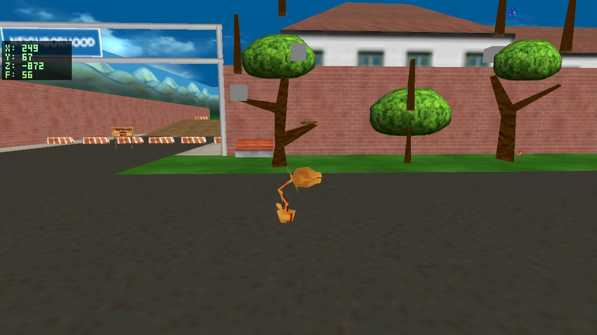
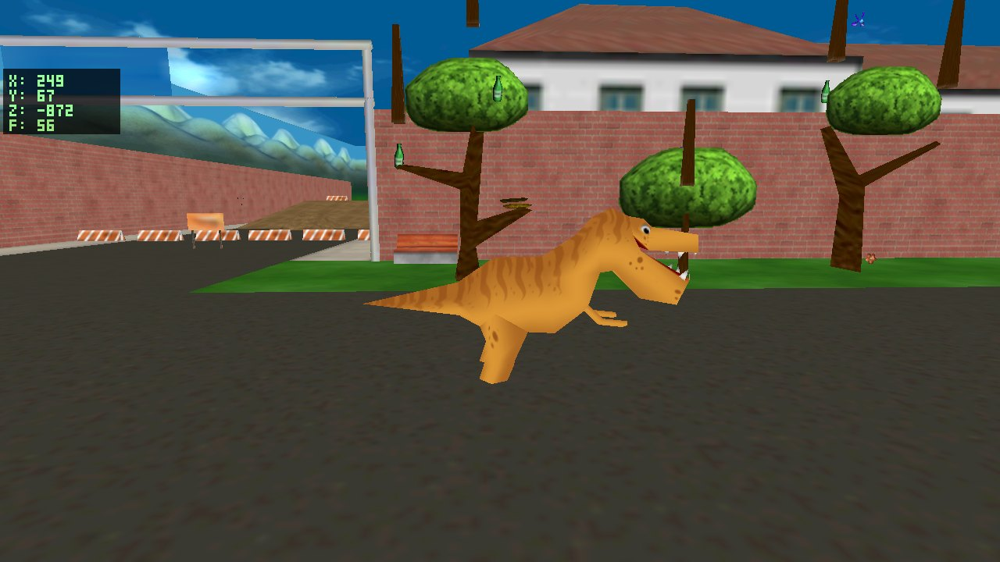
The resolver row pointed at assets/ase/omt/dino.ASE — a mesh that happens to be named
"dino" inside the objects.omt container (a level prop, not the character). The ground truth was already
on disk: the Ghidra-derived decomp spec docs/decomp/C3DDino.md captures the class's
InitObject verbatim:
(**(code **)(puVar1 + 0xd8))(s_HIWALK, s_dinowalk_ase); (**(code **)(this->vftable + 0xd8))(s_HISHRINK, s_dinoshrink_ASE); (**(code **)(this->vftable + 0xd8))(s_HISTOP, s_dinostop_ase); (**(code **)(this->vftable + 0xf0))(s_dino_png, 0);
The class registers dinostop.ase (+walk/shrink anims) and loads dino.png —
both already extracted from the original install. One ls confirmed they exist.
{ "3DIN", { "assets/ase/dinostop.ASE", "assets/png/dino.png" } }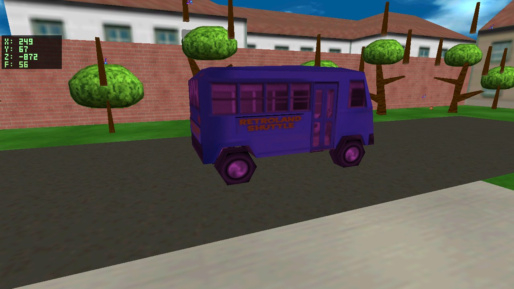
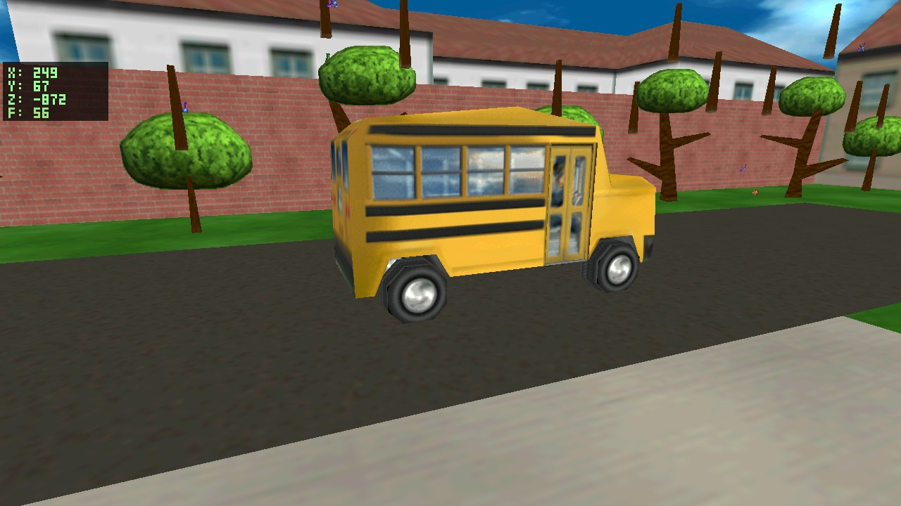
Both bus meshes ship in the original install; the resolver had picked the wrong one. Their ASE material blocks distinguish them instantly:
bus.ASE: *BITMAP "D:\neutron\run\png\bus.png" ← school bus retrobus.ASE: *BITMAP "D:\Jimmy\busretro.bmp" ← Retroland shuttle
docs/decomp/C3DBus.md settles it from the binary itself: C3DBus's lazy visual loader
"registers HIDEFAULT → bus.ase, loads bus.png into texture slot 0".
{ "3SBU", { "assets/ase/bus.ASE", "assets/png/bus.png" } }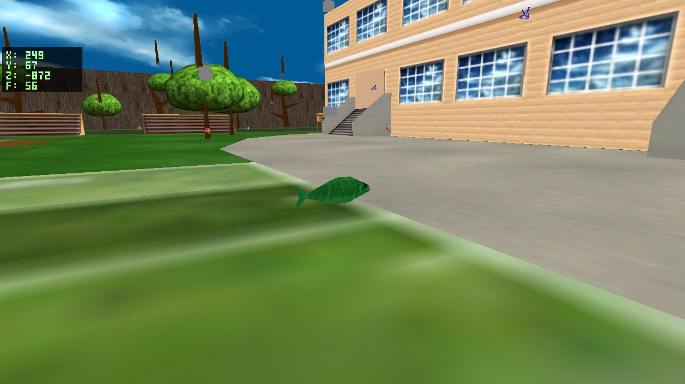
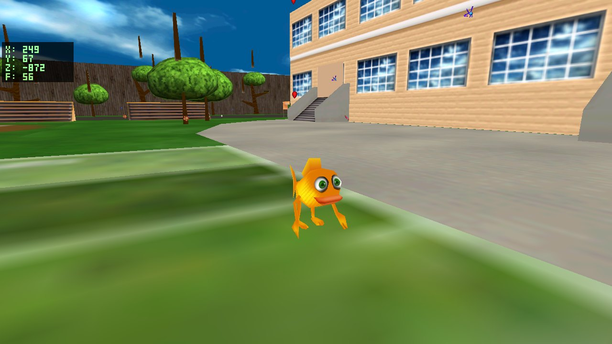
The reporter's "level editor model" instinct was exactly right — the bound mesh's own material path betrays its origin as a 3D-items pickup asset, not a character:
fish2.ASE: *BITMAP "D:\Jimmy (ken)\3D Items (pick up)\bmp\fish3.bmp"
docs/decomp/C3DDarwinFish.md shows the class registering
darwinwalk.ase / darwinshrink.ASE / darwinstop.ase and loading darwin.png —
the same registration pattern as the dino (the two classes share their decompiled InitObject shape).
{ "3FIS", { "assets/ase/darwinstop.ASE", "assets/png/darwin.png" } }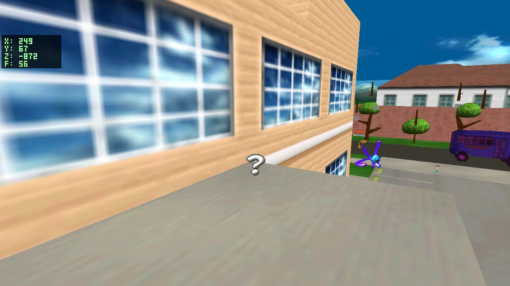
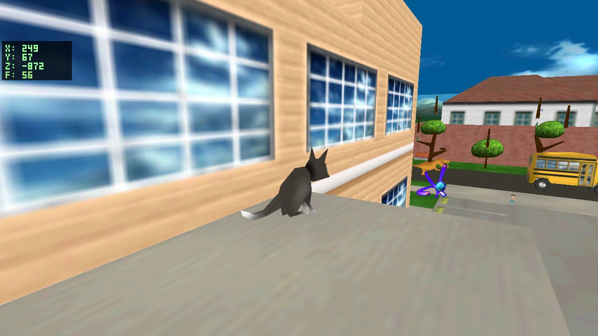
This one had two layers. First, the resolver had no per-tag row for "kitty", so it should have fallen
to a generic pickup. But the engine logs showed no cat mesh ever loading — because 3PIC entities with an
authored SpriteIndex > 0 take a separate billboard shortcut. Decoding what that index
actually points at explained the mystery floating "?":
hidden: the original level editor's "hidden object" placeholderThe original game never renders this marker — the kitty pickup (the level's rescue-the-cat objective)
shows the cat itself. docs/decomp/C3DKitty.md confirms cat animations + cat.png.
{ "3PIC", "kitty", { "assets/ase/catsit.ASE", "assets/png/cat.png" } }, plus a new
entity_visual_tag_override() check so curated tag visuals take precedence over the
SpriteIndex billboard shortcut.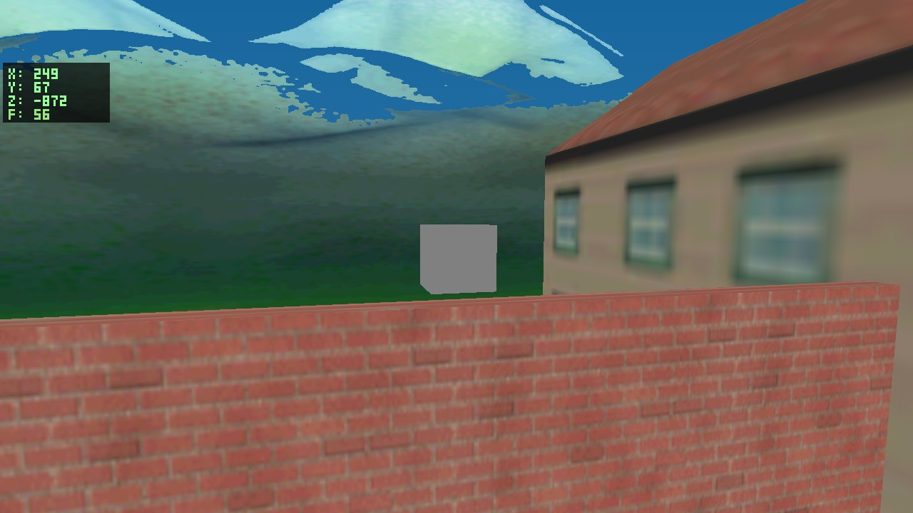
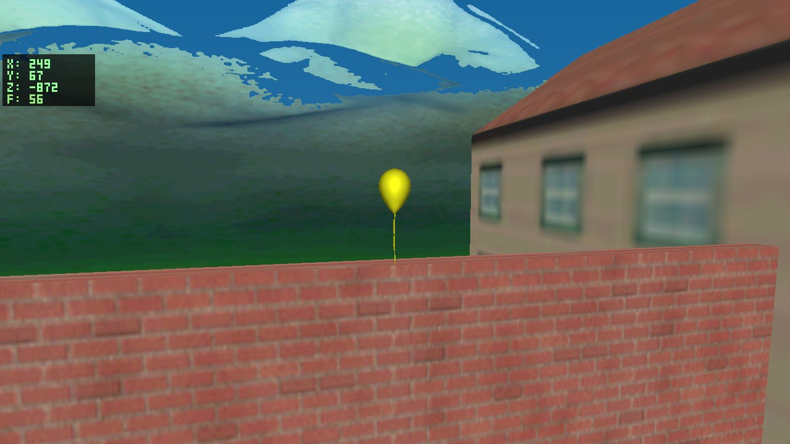
Bug A (white quad): the resolver row hardcoded
0050_32x32d32.png — an image-file ordinal from an older interpretation of SpriteIndex.
That file doesn't exist (texture load fails → white). The generated sprite-chunk map, built after the
SpriteIndex = canvas-chunk-id discovery, already had the right answer:
{ "sprites.omt", 50, ".../0071_128x128d32.png" }, /* balloon */
balloon canvasBug B (colors): a hex dump of a 3BAL record in Level2.gam revealed three
unparsed per-instance float properties:
Red ... 3f000000 = 0.5 (big-endian float) Green ... 3dcccccd = 0.1 Blue ... 3f800000 = 1.0
docs/decomp/C3DBalloon.md (measured from the binary) documents exactly where they go:
"Adjusted canvas/material color record set to (Red, Green, Blue, 0.8)". That's what makes
each balloon a different color — the engine just wasn't reading them.
Red/Green/Blue from the entity's property bag and applies them as an (R, G, B, 0.8) tint.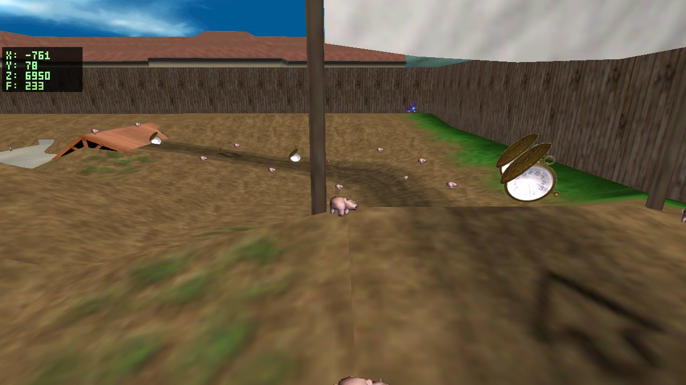
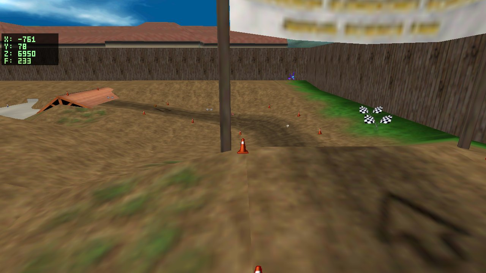
Same root cause as the balloons, but this time the wrong file existed — which is why it rendered
a piggybank rather than white. The stale row referenced image file 0041_…png; cross-checking the
generated chunk map showed file 0041 actually belongs to canvas chunk 160:
{ "sprites.omt", 160, ".../0041_128x128d16.png" }, /* piggybank ← what the row pointed at */
{ "sprites.omt", 41, ".../0062_64x64d32.png" }, /* cone ← what chunk 41 really is */
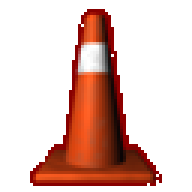
A file-ordinal ↔ chunk-id collision: for low ids the two numbering schemes coincide (which is why older sprite rows worked), and they diverge exactly where this ticket found bugs. A third stale row (3LEA, leaves) was caught and fixed in the same sweep before anyone reported it.
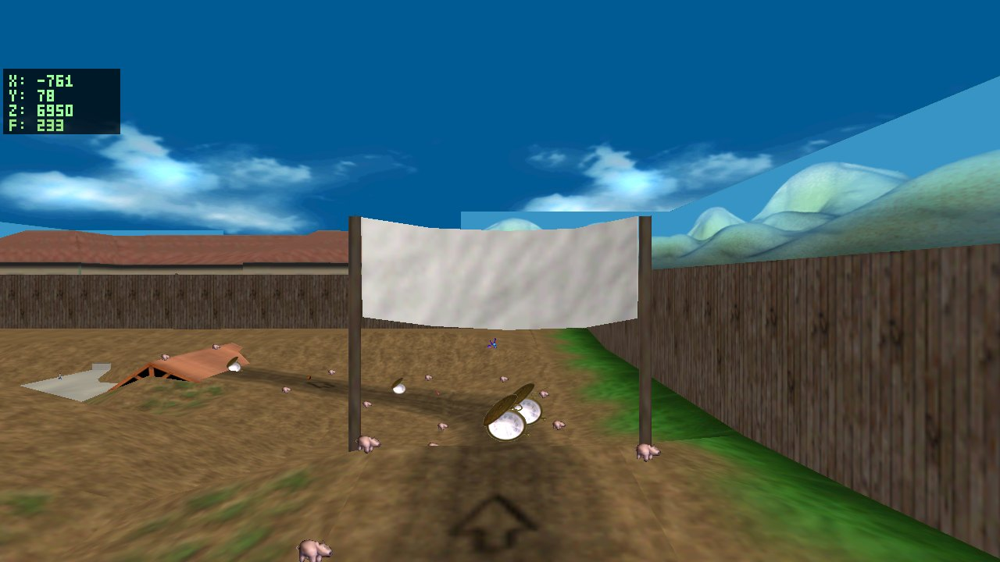
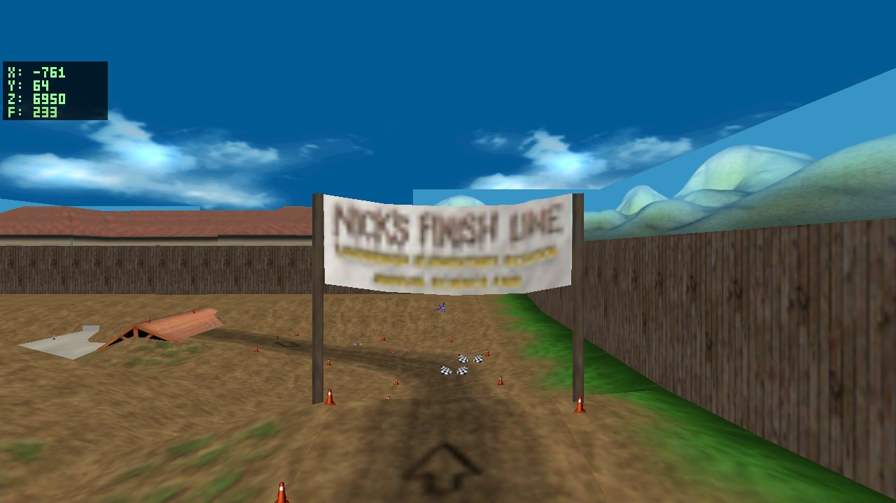
The hardest item — every layer of the asset pipeline checked out clean, one by one: the banner texture parses correctly from the level container; the exported GLB embeds it on the right faces (verified by decoding the mesh's triangles + materials directly); the GLB loader uploads one GL texture per material group; the placement draw path passes no overrides; culling is off. The data was provably perfect:
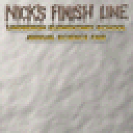
finish canvas, parsed from level2b.omt — text intactWith the asset exonerated, the suspect had to be runtime state. A raw view/projection camera descriptor was crafted to frame the sign headless — it rendered textured cloth with no text. Dumping the banner primitive's UVs exposed the trick: the banner is two co-planar quads at identical depth — triangles 0–7 sample the blank-cloth band of the texture, triangles 8–15 (drawn second) sample the text band:
tri 0 cloth v= [-0.55 -0.20 -0.54] tri 8 TEXT v= [-0.65 -1.00 -0.99] tri 1 cloth v= [-0.20 -0.22 -0.54] tri 9 TEXT v= [-0.67 -0.65 -0.99] ... ... (same positions, same depth)
That's a decal pattern that only works under Direct3D 7's default depth test,
D3DCMP_LESSEQUAL — equal-depth fragments pass, so the later text layer wins. OpenGL defaults to
GL_LESS — equal-depth fragments fail, so the text layer could never draw a single pixel.
The engine had simply never set a depth function.
glDepthFunc(GL_LEQUAL) at renderer init (matching the
D3D7 default the original game ran under), plus adding the symbol to the engine's minimal GL loader.
This is a faithfulness fix at the renderer level: any other co-planar decal layering in the original data
now resolves the same way it did in 2001.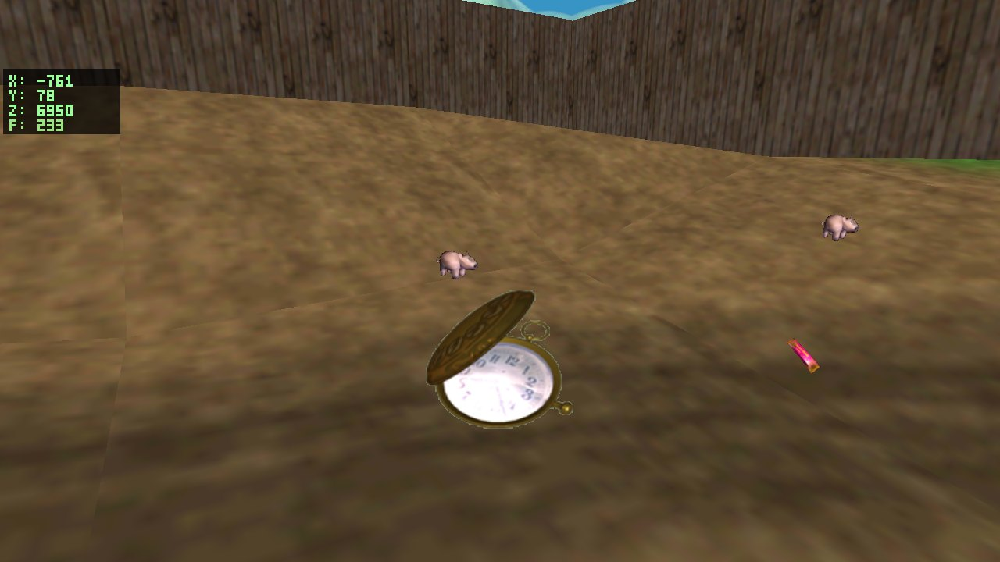
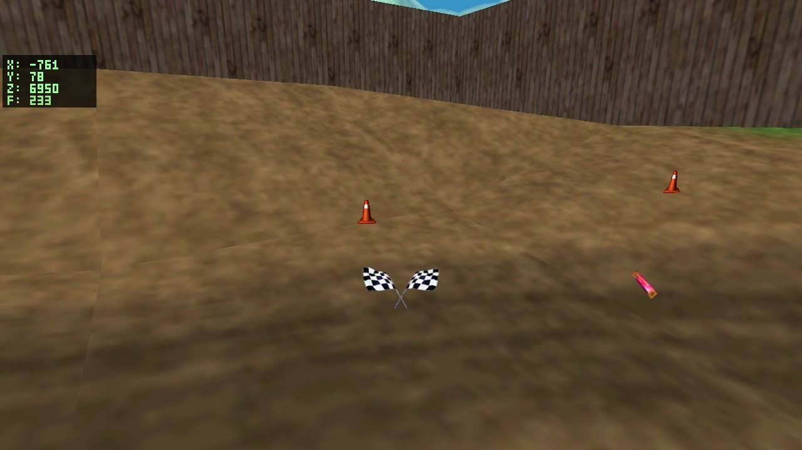
The engine runs two games (JNBG and its sequel JN vs JN), and the checkpoint visual was a single
hard-coded row pointing at the sequel's clock sprite for both. But the QA export itself contained
the answer: the JNBG .gam authors SpriteIndex 42 on every checkpoint, and chunk 42
in sprites.omt is a canvas named — literally — flag:
spr_checkpoint (what rendered)All eight items were diagnosed and fixed in a single session by Claude (Fable 5) running in Claude Code on the project box, with no human-written code. The general loop:
entity_visual.c; five reports were table-row inspections from there.docs/decomp/C3D*.md) state which assets the original binary registers — four items were settled
by reading them, no new reverse engineering needed.docs/decomp/ already recorded each class's measured asset bindings.
A lint that cross-checks resolver rows against decomp-doc asset references could catch mismatches
before QA ever sees them.